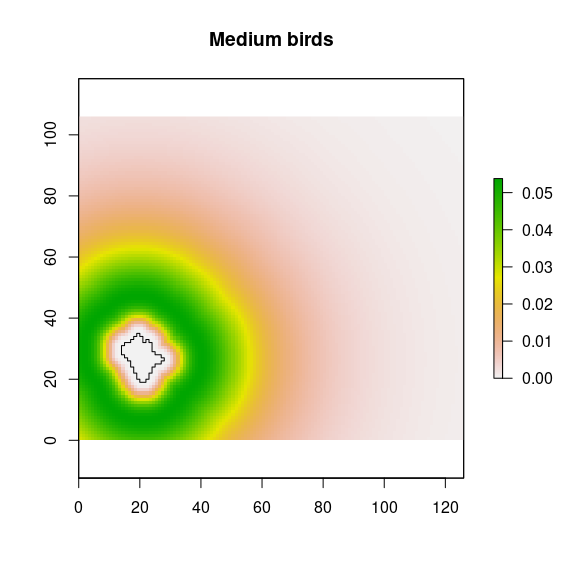
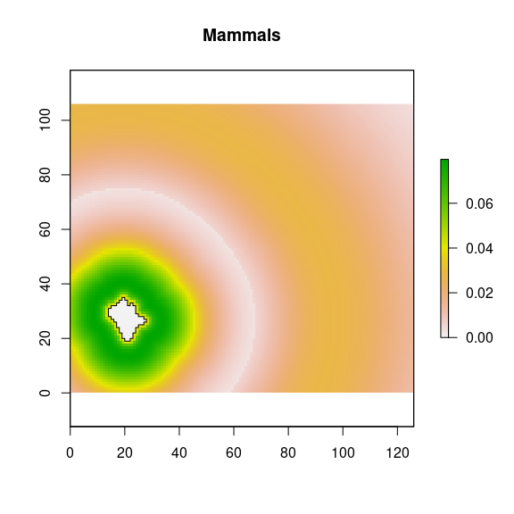

Introduction
This is a detailed description of the functioning of the app and of the diveRpine package. We add some notes to modify and customize the app. This’s a live document.
Landscape configuration
The first step is creating a virtual landscape with different land-uses. By default diveRpine uses four different land-uses: pine plantation, natural forest, cropland and others. To create the virtual landscape, diveRpine uses the auxiliary function create_landscape(). It generates a raster of 13356 ncell (106 rows and 126 cols) (Figure 1).
library(diveRpine)
library(tidyverse)
library(raster)
library(landscapeR)
library(knitr)
library(kableExtra)
library(sf)
library(viridis)
empty_landscape <- diveRpine::create_landscape()
plot(empty_landscape, legend = FALSE, col = "#FFFFe5")Figure 1: Empty virtual landscape.
Target pine-plantation
The next step is to configure the target pine-plantation. The user has to specify several features of the target pine-plantation:
- Pine plantation size (
pp_size) - Pine plantation tree density (
pp_den): low, medium or high.
- Past land use (
pp_use): oak forests, shrublands, pasture or croplands - Climate-proxy Factors: Elevation (
elev) and Annual radiation (rad)
For instance, a user could select a pine plantation size of 1000 ha (pp_size) with a low tree density (< 500 tree/ha). The land use previous to the establishment of the pine plantation was Natural Forest (oak). The target pine plantation is located at 1400 m.a.s.l. and with an annual radiation of 4.5 GJm-2.
# Here there are some inputs needed for manual rendering (#not run)
input <- list()
# Select pine size
pp_size <- 1000
pp_den <- "low"
pp_den_den <- 100
pp_use <- "Oak"
elev <- 1400
rad <- 4.5
input$pp_size <- pp_sizeThe app creates a pine plantation patch, with the features selected by the users (Figure 2).
# position
position_pine <- matrix(
c(
nrow(empty_landscape) / 2,
ncol(empty_landscape) / 2
),
ncol = 2, nrow = 1
)
# Create pine plantation target
pine <- landscapeR::makePatch(empty_landscape,
val = 1, rast = TRUE, bgr = 0,
size = input$pp_size,
spt = position_pine
)
plot(pine, legend = FALSE, axes = FALSE, col = c("#FFFFe5", "#a1d99b"))Figure 2: Pine plantation created by the user.
Natural forests
Then, several natural forests patches are created according to user selection. Before, the position of the natural forests are established using the free background space. The position(s) depends on the number of natural forest patch selected by the users. For instance, a user could select 5 natural forest patches (nf_n) with a size range between 100-200 ha (nf_size).
#### Get the positions for the creation of the NF patches.
nf_n <- 5
input$nf_n <- nf_n
#### Get the positions for the creation of the NF patches.
positions_nf <-
sample(
which(t(raster::as.matrix(pine) == 0)), nf_n
)
#### Generate the sizes of the natural forests patch
nf_size <- c(100, 200)
input$nf_size <- nf_sizeThen, the user select the range sizes of the natural forests patches.
Natural forest patches are added to the virtual landscape (Figure 3).
## pine_oak
pine_oak <- makeClass(pine,
val = 2, rast = TRUE,
npatch = nf_n,
pts = positions_nf,
size = nf_sizes
)
plot(pine_oak, legend = FALSE, axes = FALSE,
col = c("#FFFFe5", "#a1d99b", "green"))Figure 3: Pine plantation (ligth green) and natural forests (green) patches created by the user.
crops_size <-
sample(
10:ceiling(
length(which(t(raster::as.matrix(pine_oak)) == 0)) * 0.05
),
size = n_crops
)
landscape <-
makeClass(pine_oak,
val = 3, rast = TRUE,
npatch = n_crops,
size = crops_size
)
plot(landscape,
legend = FALSE, axes = FALSE,
col = c("#FFFFe5", "#a1d99b", "green", "lightgoldenrod1")
)Figure 4: Landscape configuration.
Crops
Now, crop patches are added to the virtual landscape resulting with the first configuration of the landscape (Figure 4).
Compute initial richness
A richness value is assigned to each pixel. This value will depend on the pixel category (i.e. natural forest, pine plantation, etc).
Pine plantation
For each pixel \(j\), the initial richness value (\(R_{init,j}\)) is computed following
\[ Richess \sim Potential\ Richenss \times fc \]
where \(Potential\ Richenss\) is a random value coming from a range of values obtained from references in our study area (Gómez-Aparicio et al. 2009, Pérez-Luque et al. 2014); and \(fc\) is a correction factor which considers:
\[fc = w_{past}\cdot f(\mathrm{past~Land~Use}) + w_{dist}\cdot f(\mathrm{Seed~source~distance}) + w_{treeden}\cdot f(\mathrm{Tree~density}) + w_{clim}\cdot f(\mathrm{Climate~proxy})\] We specified the following weights according to literature (Gómez-Aparicio et al. 2009, Navarro-González et al. 2013, Pérez-Luque et al. 2014):
- \(w_{past} = 0.2\)
- \(w_{dist} = 0.35\)
- \(w_{treeden} = 0.25\)
- \(w_{clim} = 0.2\)
Tree Density (ftreeden)
Richness and species diversity within pine plantation are strongly conditioned by the tree density (Gómez-Aparicio et al. 2009). Tree Density of the pine plantation has a negative effect on the plant diversity, and on the total plant species richness. An increase on the plantation tree density provokes decreasing of the richness plant values (Gómez-Aparicio et al. 2009). In our study area, the lower diversity of plant species observed in pine plantations is probably due to the high tree density of pine plantations compared to natural forests, which implies lower light levels under the canopy, and this implies lower diversity of herbaceous species.
In addition, the abundance and richness of disperses birds is negatively affected at high tree densities (especially for jays), reducing the flow of seeds entering into the pine plantations, and thus the potential plant species diversity within them.
So, potential richness is affected by pine forest density. Thus, according to Eq. 3 of Gómez-Aparicio et al. (2009), potential richness is affected as a function of density, as follows:
\[ ftreeden = \exp \left [ -\frac{1}{2} \left( \frac{ treeDensity - 0.22} {1504.1} \right )^2\right ] \]
Seed source distance (fdist)
Seed dispersal depends on the distance from the seed source (Hewitt and Kellman 2002). In pine plantations, the presence and abundance of species other than pines is determined, among others, by the distance to the seed source (González-Moreno et al. 2011), although it is not the only reason that explains the diversity observed in pine plantations.
González-Moreno et al. (2011) found that, of the different vegetation types considered in our study are, natural oak forests are the most influential in terms of distance to the seed source. Oak vegetation has higher plant diversity than pine plantations,especially for herbaceous species (Gómez-Aparicio et al. 2009). Shorter distances could increase the pool of species in the pine plantations and reduce the evenness of plantation communities.
Specifically, the relationship found between distance to the source and diversity observed in pine plantations is governed by the following equation:
\[ Diversity = 1.7605 - 0.0932 * \sqrt{\sqrt{Distance}}\]
So, for each pixel of pine plantation the distances between the centroid of the pixel and the edge of each natural forest patches are computed using the function dist2nf() (Figure 5).
dist_raster <- dist2nf(landscape)
borde_pine <- rasterToPolygons(landscape,
fun = function(x) {
x == 1
}, dissolve = TRUE
)
nf_edges <- rasterToPolygons(landscape, fun = function(x) {
x == nf_value
}, dissolve = TRUE)
plot(dist_raster, col = magma(25, direction = -1))
plot(borde_pine, add = TRUE)
plot(nf_edges, add = TRUE, border = "brown")Figure 5: Distance of natural forests’s pixels to pine plantation’s pixels.
Then, we compute the distance effect on the diversity for all the landscape (Figure 6), but we will focus only on pine plantations (Figure 7). We can see that pixels close to natural forest patches has higher values of diversity.
### Compute diversity raster (See Gonzalez-Moreno et al. 2011)
sh <- calc(dist_raster, fun = function(x) {
1.7605 - 0.0932 * (sqrt(sqrt(x)))
})
plot(sh)Figure 6: Distance effect on diversity according to Gonzalez-Moreno et al. (2011).
landscape1 <- landscape
landscape1[landscape1 == 1] <- -100
s <- calc(stack(landscape1, sh),
fun = function(x) ifelse(x[1] == -100, (x[1] / -100) * x[2], NA))
plot(s)
plot(borde_pine, add=TRUE)Figure 7: Distance effect on diversity for pine plantation according to Gonzalez-Moreno et al. (2011).
We scaled the distance effect from 0 to 1 (Figure 8).
### Scale the distance effect from 0 to 1
sh_scaled <- (s - cellStats(s, "min")) / (cellStats(s, "max") - cellStats(s, "min"))
plot(sh_scaled)
plot(borde_pine, add=TRUE)Figure 8: Distance effect (scaled values) on diversity for pine plantation according to Gonzalez-Moreno et al. (2011).
Past Land Use
The past land-use affects to seed banks. In our study area, seedling regeneratio of Quercus species within pine plantation depends on past land-use, distance to seed sources and tree density (Gómez-Aparicio et al. 2009, Navarro-González et al. 2013). We know that the regeneration of Quercus in pine plantations depends more on past land-use than on plantation tree density and distance to the seed source (see table 2 in Navarro-González et al. (2013)). To quantify the importance of each of the three variables, we look at the values of variance explained by each of the models for each variable. Subsequently, we rescale the importance of each variable and obtain:
| variable | Pseudo.R2 | rescaled.importance |
|---|---|---|
| past Land Use | 0.1238 | 0.4767 |
| Propagule source distance | 0.0832 | 0.3204 |
| Pine tree density | 0.0057 | 0.2029 |
Therefore, we can say that the regeneration of Quercus under pine plantation followed the next rule:
\[ reg \sim 0.4767 \cdot pastlandUse + 0.3204 \cdot Distance + 0.2029 \cdot Density \] We consider only the past land-use, as tree-density and distance to source are considered in a above hierarchical level.
But, we need to know the contribution (importance) of the Quercus species to the richness found in pine plantations. We use data from SINFONEVADA Forest inventory (Pérez-Luque et al. 2014). Of the total richness observed in the SINFONEVADA plots, we analyze how much is due to the contribution of Quercus species
df <- read.csv("diversity_sinfonevada.csv")
# How many species by plot
richness_loc <- df %>%
group_by(decimalLatitude, decimalLongitude) %>%
count() %>%
as.data.frame() %>%
tibble::rownames_to_column(var='id_plot') %>%
rename(rich = n)
# Get number of quercus species by plot
q <- df %>%
filter(grepl("Quercus", scientificName)) %>%
group_by(decimalLatitude, decimalLongitude) %>%
count() %>%
as.data.frame() %>%
rename(rich_quercus = n)
# Get total richness by plot
richness_tot <- df %>%
group_by(decimalLatitude, decimalLongitude) %>%
count() %>%
as.data.frame() %>%
rename(rich_total = n)
per_quercus_plot <- richness_tot %>%
inner_join(q, by=c('decimalLatitude', 'decimalLongitude')) %>%
mutate(per = rich_quercus / rich_total)
per_quercus_plot %>% ggplot(aes(per)) + geom_histogram() +
xlab('% Quercus species by plot') + theme_minimal()Figure 9: Percentage of Quercus species by plot in forest inventories of Sierra Nevada (n = 600 plots; Pérez-Luque et al. 2014).
Quercus contribute (on average) to the richness of the plot about 9 % (Figure 9), therefore, we should adjust the contribution of land use to the richness of the pine forest plots.
The richness value of a plantation is conditioned by the past land use (Navarro-González et al. 2013), since the probability of finding recruits of Quercus species within a pine plantations depends on the past land use of that plantation. Navarro-González et al. (2013) differentiate between the probability of finding regeneration in a pine plantation and the amount of regeneration (number of recruits) found within pine plantation. In our case, we are more interested in the probability of finding regeneration, rather than abundance. Thus we have that:
- The probability of not finding regeneration within a plantation varies as a function of past land use. For each of the past land uses the zero-inflated model of (Navarro-González et al. 2013) estimates odds-ratio. These values have been rescaled between 0.0001 and 0.9999. We have computed the inverse (1 - x) of the rescaled probability (to convert it into probability of finding regenerated). Thus we have:
| Past.Land.Use | odds.Ratio | rescaleValue | reverse.Rescale.Value |
|---|---|---|---|
| Oak formation | 0.3935 | 0.0001 | 0.9999 |
| Mid-mountain Shrubland | 1.7576 | 0.5018 | 0.4982 |
| Pasture | 3.1119 | 0.9999 | 0.0001 |
| Cropland | 3.0362 | 0.9720 | 0.0279 |
where, the rescaled probability of finding regeneration as a function of land use follows the following gradient: Holm oak forest (0.9999) > Shrubland (0.4982) > Cropland (0.0279) > Grassland (0.0001).
- The amount of regenerated also depends on past use (Navarro-González et al. 2013). In our model, the amount of regeneration does not affect richness, but simply the presence and/or absence of regeneration, so we will use only the rescaled probability of finding regeneration to include past land use.
Note that all these values are for the same distance and an average density of 750 pines / ha.
Climate-proxy variables
Climatic conditions are important determinants of species richness, particularly in mountainous regions. In our study area (Sierra Nevada, southern Spain), Gómez-Aparicio et al. (2009) found an effect of climate conditions on potential species richness within pine plantations. These authors used 19 variables related to climatic and topographic conditions, and applied a principal components analysis (PCA), and they found that elevation and annual radiation were the variables most correlated with the first two axes of the PCA (which explaining 83.3 % of the variance) (See equation 2 and Figures 5A-B in Gómez-Aparicio et al. (2009)). They found that climate have a strong effect on plant richness and also on potential regeneration. In our app, diveRpine, we only considered the potential richness, and the effect of climate conditions on the potential richness within pine plantations were implemented using the equation 2 of Gómez-Aparicio et al. (2009), specifically: \[\mathrm{Climatic~effect}=\mathrm{exp}\left [-\frac{1}{2}\left ( \frac{\mathrm{Altitude }- \mathrm{XA_0}}{\mathrm{XA_b}} \right )^{2} \right ] \times ~\mathrm{exp}\left [-\frac{1}{2}\left ( \frac{\mathrm{Radiation }- \mathrm{XR_0}}{\mathrm{XR_b}} \right )^{2} \right ]\] with \(\mathrm{XA_0}=1557.16\), \(\mathrm{XA_b}=644.89\), \(\mathrm{XR_0}=0\), and \(\mathrm{XR_b}=13.24\)
This equation in used as default in initRichess() with the argument fclim,
that used the elevation (elev) and radiation (rad) values specified by the
user in the diveRpine app.
Natural Forests an Crops
For natural forests and crop pixels, the initial richness value will be randomly selected from a specific richness range.
Pixels belong to Natural forest. Initial richness value of each pixel will randomly selected from a specific richness range. This specific range comes from field inventories carry out in our study area (Gómez-Aparicio et al. 2009, Pérez-Luque et al. 2014). Range: 13.72 - 16.11
Pixels belong to Crops. Initial richness value of each pixel will randomly selected from a specific richness range. This specific range comes references (Mendoza et al. 2009, Matías et al. 2010)
Range: 1 - 2
| Type | Type numeric | Low Richness value | High Richness value |
|---|---|---|---|
| 0 | 0.00 | 0.00 | |
| Pine plantation | 1 | 12.82 | 13.34 |
| Natural Forests | 2 | 13.72 | 16.11 |
| Crops | 3 | 1.00 | 2.00 |
Initial Richness
The initial Richness is computed using the function initRichness()
# landscape()
# dist_raster()
# ri_range (init params )
# den_pp()$den
# pastUse()
rasterRich <- initRichness(r = landscape,
draster = dist_raster,
r_range = r_range,
treedensity = pp_den_den,
pastUse = pp_use,
elev = 1500,
rad = 4,
rescale = FALSE)And it can be plotted using plot_richness() (Figure 10)
plot_richness(rasterRich)Figure 10: Initial Richness of the landscape.
Get values of Richness for NF and Pine
We used an custom function to compute the mean, min and max. This function (summaryRaster()) takes a raster and compute the mean, max and min values of the cells.
We applied this function to compute the Richness values of Natural forests patches (Figures 11 and 12), and Pine plantation target patch (Figures 13 and 14) (init and end configuration). The summary values are displayed on the bottom-left side of the diveRpine app.
Natural Forests
rich_nf <- calc(
stack(landscape, rasterRich),
fun=function(x) ifelse(x[1] == nf_value, (x[1]/nf_value)*x[2], NA))
plot(rich_nf, axes=FALSE)Figure 11: Richness for natural forests.
dfnf<- drop_na(raster::as.data.frame(rich_nf))
dfnf %>%
ggplot(aes(layer)) + geom_histogram() +
theme_minimal() +
ylab("n pixels") + xlab("Richness Value") +
geom_vline(xintercept = mean(dfnf$layer)) +
ggtitle("Natural Forests")Figure 12: Histogram of richness for natural forests
The mean, min and max values for natural forests are showed in the value box of the bottom-left part of the app.
Pine plantation
pp_value <- 1
rich_pp <- calc(stack(landscape, rasterRich), fun=function(x) ifelse(x[1] == pp_value, x[1]*x[2], NA))
plot(rich_pp, axes=FALSE)Figure 13: Initial Richness for pine plantations.
dfpp<- drop_na(raster::as.data.frame(rich_pp))
dfpp %>%
ggplot(aes(layer)) + geom_histogram() +
theme_minimal() +
ylab("n pixels") + xlab("Richness Value") +
geom_vline(xintercept = mean(dfpp$layer)) +
ggtitle("Pine plantation")Figure 14: Histogram of initial richness for pine forests
The mean, min and max values for the initial pine plantation are showed in the value box of the bottom-left part of the app.
Dispersal module
The next step is computed the input of seed propagules from sources (natural forest) into target pine plantation via dispersers (sensu Nathan et al. 2012).
The quantity and quality of seed dispersion are influenced by:
- Seed sources: seed diversity in seed source patch, and patch size
- Disperser: percentage of each disperser
- Landscape configuration
Dispersers
We have considered three classes of dispersers:
small birds, e.g. European robin (Erithacus rubecula); Sardinian warbler (Sylvia melanocephala)
medium birds, e.g. Eurasian jay (Garrulus glandarius)
mammals, e.g. Red fox (Vulpes vulpes)
For each type of disperser, different dispersion kernels have been considered:
Small-sized birds rarely exceed 100 m in distance, and approximately 50% of the seeds are dispersed in the first 50 m (Jordano et al. 2007, Zamora et al. 2010).
Medium-sized birds disperse 50% of the seeds over a distance of more than 100 m (Jordano et al. 2007). The Eurasyan jay shows a dispersion range between 5 and 1000 m for Sierra Nevada mountains (SE Spain)(Gómez 2003). The distance at which the maximum dispersion occurs depends on the target patch, being approximately 400 me when the target patch is a pine plantation (Pons and Pausas 2007).
Mammals disperse in a range from 0 to more than 1500 m, with the dispersion peak at 650 - 700 m. More than 50% of the seeds dispersed by mammals are deposited at distances greater than 495 m (Matías et al. 2010).
| Dispersers | Dispersion range (m) | Peak distance | 50% Distance | Refs. |
|---|---|---|---|---|
| Small birds | 0 - 100 | < 51 | Jordano et al. (2007); Zamora et al. (2010) | |
| Medium birds | > 110 | Jordano et al. (2007) | ||
| Eurasian jay | 5 - 1000 | 263*; 402** | Gómez (2003) | |
| 3 - 550 | 68 | Pons and Pausas (2007) | ||
| Mammals | 0 - 990 | 650 - 700 | > 495 | Jordano et al. (2007); Matías et al. (2010) |
Figure 15: Dispersion kernels used for each disperser in diveRpine.
According to the disperser type, the potential_dispersion() function uses by
default different dispersion kernels. For small and medium birds a log-normal
dispersion kernels were used. Specifically, log-normal density function with mean
and standard deviation values of \(log(51)\) and \(log(2)\) respectively for
small-sized birds, and log-normal density function with mean and standard deviation
values of \(log(201)\) and \(log(2)\) for medium-sized birds. This distribution were
implemented using the stats::dlnorm() function. For mammals, a combination of
log-normal and Weibull dispersion kernel was used. Specifically, from 0 to 400 m
of distance from the seed source, a Weibull distribution with a shape and scale
parameters of 1.385 and 137 respectively was used (See stats::dweibull());
whereas a log-normal density function with mean and standard deviation values of
\(log(751)\) and \(log(1.346)\) respectively, were applied for distances higher than
401 m from seed source. Different kernels functions could be specified using the
parameters kernel_sbi, kernel_mbi, and kernel_ma within potential_dispersion()
(see Advanced configuration article).
For each of the natural forest patches, the distance to the target pine plantation is computed. For instance, we computed the distance from the natural forest patch located at bottom-left side of our landscape (Figure 4). And then, we applied the kernels of each disperser type using the seed source values ((Figure 16).
x <- landscape
# Get polygons of Natural forests
nf_edges <- raster::rasterToPolygons(x, fun=function(x){x == nf_value}, dissolve = TRUE)
nf_patches <- sp::disaggregate(as(st_as_sf(nf_edges), "Spatial"))
i <- 2
# distance between nf polygong i and cells of the raster
d <- rgeos::gDistance(nf_patches[i,], methods::as(x,"SpatialPoints"), byid=TRUE)
d_nfi <- x
d_nfi[] <- apply(d, 1, min)*10 # compute minimun distance; and multiply by 10 meters
names(d_nfi) <- paste0("nf", i)
plot(d_nfi)
plot(nf_patches[i,], add=TRUE)Figure 16: Distance from a natural forest patches to all the virtual landscape.
As we previously stated, we used different functions to compute the kernels of each disperser kernel_sbi, kernel_mbi, and kernel_ma. And the compute the potential contribution of propagules into target pine plantation according to the richness values of the natural forest patches.
# Get the mean, sd, se richness of the nf patch
rich_nfi <- raster::mask(rich_nf, nf_patches[i,])
rich.mean <- raster::cellStats(rich_nfi, stat = "mean", na.rm=TRUE)
rich.sd <- raster::cellStats(rich_nfi, stat = "sd", na.rm=TRUE)
rich.se <- rich.sd/(sqrt(length(rich_nfi) - freq(rich_nfi, value=NA)))Small birds contribution
## Small bird
sbi <- raster::calc(d_nfi, fun = function(x){dlnorm(x, meanlog = log(51), sdlog = .7)})
names(sbi) <- paste0('sb',i)
### potential contribution
sbipot <- stack(sbi*rich.mean, sbi*rich.sd, sbi*rich.se)
names(sbipot) <- c(paste0("sbpot_", i, "_mean"), paste0("sbpot_", i, "_sd"), paste0("sbpot_", i, "_se"))
plot(sbipot$sbpot_2_mean, main="Small birds")
plot(nf_patches[i,], add=TRUE)Figure 17: Potential contribution from a natural forest patches by the small birds disperser.
## Medium bird
mbi <- raster::calc(d_nfi, fun = function(x){dlnorm(x, meanlog = log(201), sdlog = .7)})
names(mbi) <- paste0('mb',i)
### potential contribution
mbipot <- stack(mbi*rich.mean, mbi*rich.sd, mbi*rich.se)
names(mbipot) <- c(paste0("mbpot_", i, "_mean"), paste0("mbpot_", i, "_sd"), paste0("mbpot_", i, "_se"))
plot(mbipot$mbpot_2_mean, main="Medium birds")
plot(nf_patches[i,], add=TRUE)
## Mammals
mai <- raster::calc(d_nfi, fun = function(x){
ifelse(x <= 400,
dweibull(x, shape = 1.385, scale = 137),
dlnorm(x, meanlog = 6.621, sdlog = 0.297))})
names(mai) <- paste0('ma',i)
### potential contribution
maipot <- stack(mai*rich.mean, mai*rich.sd, mai*rich.se)
names(maipot) <- c(paste0("mapot_", i, "_mean"), paste0("mapot_", i, "_sd"), paste0("mapot_", i, "_se"))
plot(maipot$mapot_2_mean, main="Mammals")
plot(nf_patches[i,], add=TRUE)
Adjacency
Then, for each natural forest patches the adjacency to the pine-plantation target is computed. The higher the adjacency between the natural forest and the pine plantation, the lower the limitation of the propagule entry dispersed by birds. Zamora et al. (2010) found that the intercept and the
slope of the linear relation between the seed limitation (values from 0 to 1) and the adjacency (i.e. percentage of pine-plantation perimeter in contact with native forests) were 0.733 and 0.0039 respectively. Those parameters are
included by default in the function potential_dispersion(), but could be customized using the seedlim_int and seedlim_slope parameters. For each natural forest patch, the adjacency to target pine-plantation is computed. For those patches with adjacency, the potential dispersion by birds increases according a correction factor, that is computed as follows:
\[adj_{fc} = 1 + \frac{\textrm{seed Entry} - \textrm{seed Entry}_{0}}{\textrm{seed Entry}_{100} - \textrm{seed Entry}_{0}}\]
where \(\textrm{seed Entry} = 1- \textrm{seed limitation}\); \(\textrm{seed limitation}\) is computed using the seedlim_int and seedlim_slope parameters; \(\textrm{seed Entry}_{0}\) and \(\textrm{seed Entry}_{100}\) correspond to the seed entry for no adjacency and full adjacency respectively (Zamora et al. 2010).
For instance, one of the natural forest patches, intersects to target-pine plantation (Figure 18). The adjacency between natural forest patch and pine plantation corresponds to 0 % of the pine-plantation perimeter. So for this natural forest patch, a seed-entry is computed following the previous equation, and a factor of correction is applied to the input propagule.
plot(landscape)
plot(pine, add=TRUE, border="black")
plot(nf_patches[patch_adjacente, ], border="brown", add=TRUE)Figure 18: Example of intersection between pine plantation and a natural forest pacth.
According to literature, propagules input by birds and mammals in mountain pine plantation of our study area representing 3.7 and 0.2 seeds m2 yr−1 respectively (Matías et al. 2010, Zamora et al. 2010). Those values are specified in the server part of the app (see server.R; to modify them see Advanced configuration article).
The user determines the percentage of each disperser type using the slide bars in diveRpine. Those values are used as weigths to ponderate the contribution of each disperser to the input propagule into pine-plantation.
input$sb <- 20
input$mb <- 35
perma <- 100 - (input$sb + input$mb)Once, the diserpser types are configurated, the potential input of propagules into the pine plantation is computed using potential_dispersion() and input_propagule().The output is following at (Figure 19).
pot_disp <- potential_dispersion(x = landscape, rich_nf = rich_nf,
nf_value = 2, pp_value = 1)
pot_disp_pp <- input_propagule(x = landscape, pd = pot_disp, pp_value = 1)
propagule_sb <- pot_disp_pp[['sb']] * as.numeric(input$sb) * piBird
propagule_mb <- pot_disp_pp[['mb']] * as.numeric(input$mb) * piBird
propagule_ma <- pot_disp_pp[['ma']] * as.numeric(perma) * piMammal
propagule <- raster::calc(stack(propagule_sb,
propagule_mb,
propagule_ma), sum)
plot_propagule(propagule)Figure 19: Potential entry of propagules (propagules by year) into the pine-plantation.
Simulation and computation of the final richness
Finally, the user can select the length of the simulation (number of years), and diveRpine estimates the quantity of propagules input into each pixel of the pine plantation. Then, the app calculates the final richness by considering the initial richness values, the propagule input, and assuming the existence of plant establishment constraints for this mountain area (Mendoza et al. 2009, Matías et al. 2010, 2011, Quero et al. 2011). diveRpine generates a map (Figure 20) with the end richness and the average values for the entire target pine plantation are shown.
## Compute the input over time
input$timeRange <- 30
sim <- propagule*input$timeRange
rich_pp_end <- calc(stack(rich_pp, sim), sum)
rich_end <- raster::calc(stack(landscape, rasterRich, rich_pp_end),
fun = function(x) ifelse(x[1] == pp_value, x[1]*x[3], x[2]))
plot_richness(rich_end)Figure 20: Final Richness